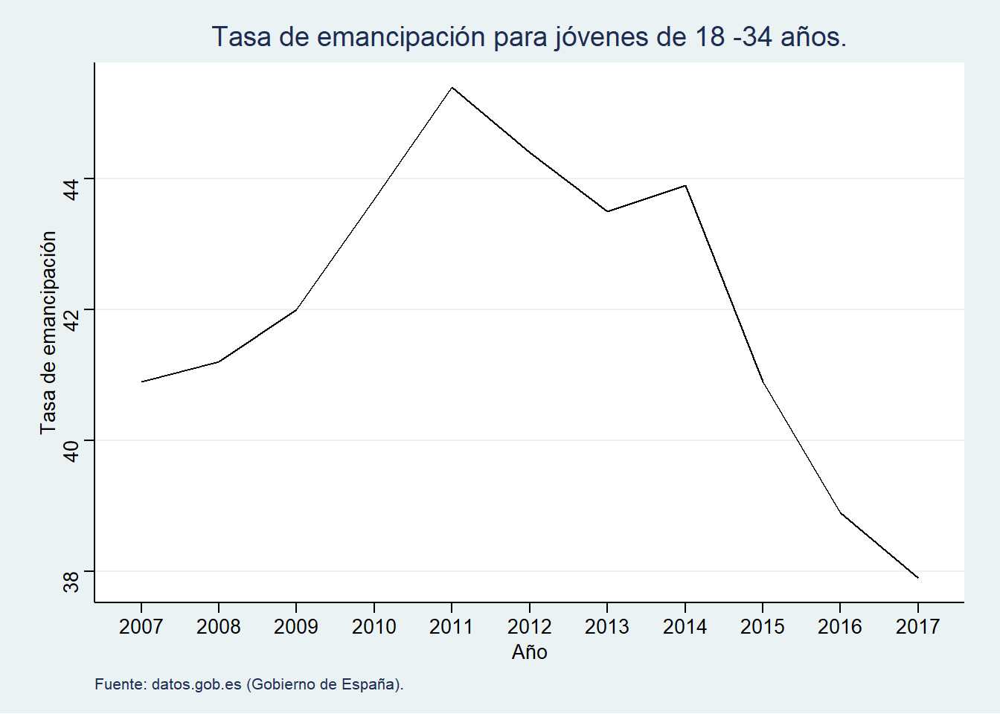
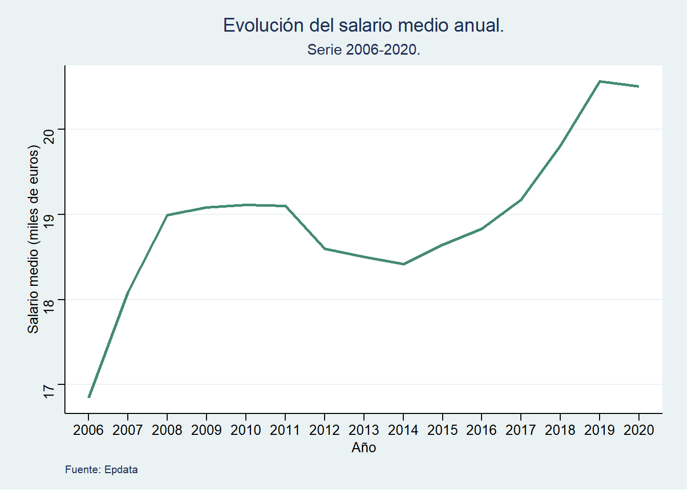
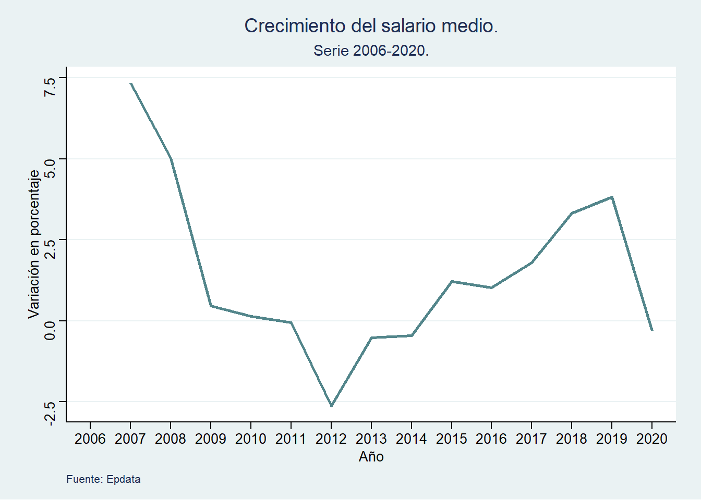
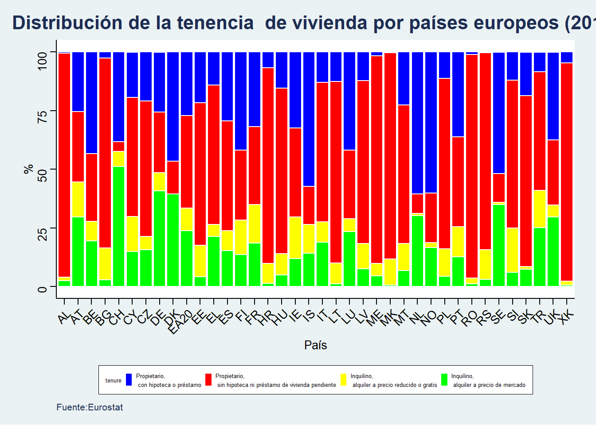
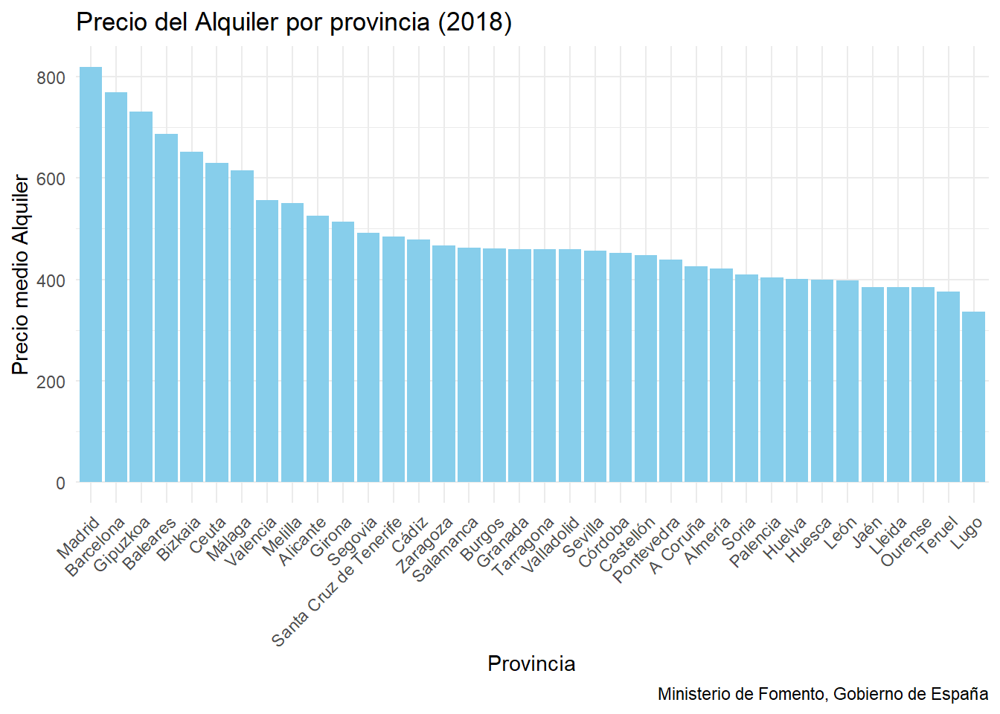
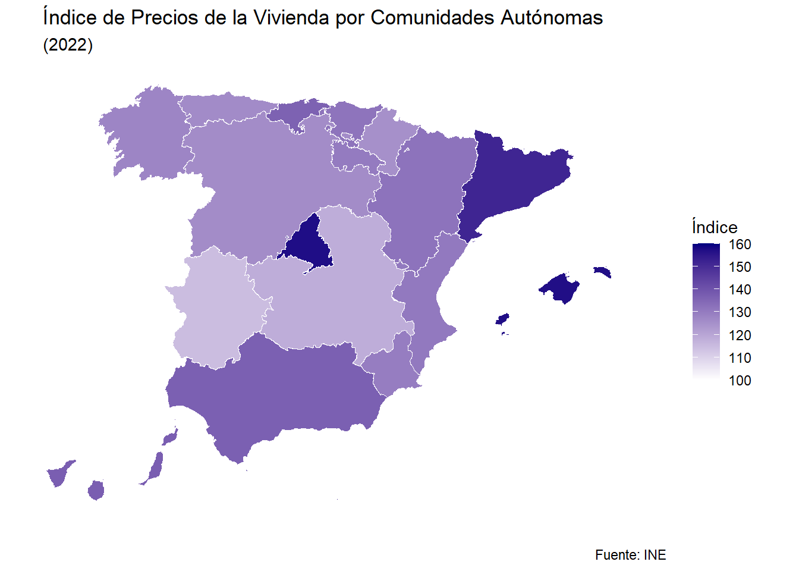
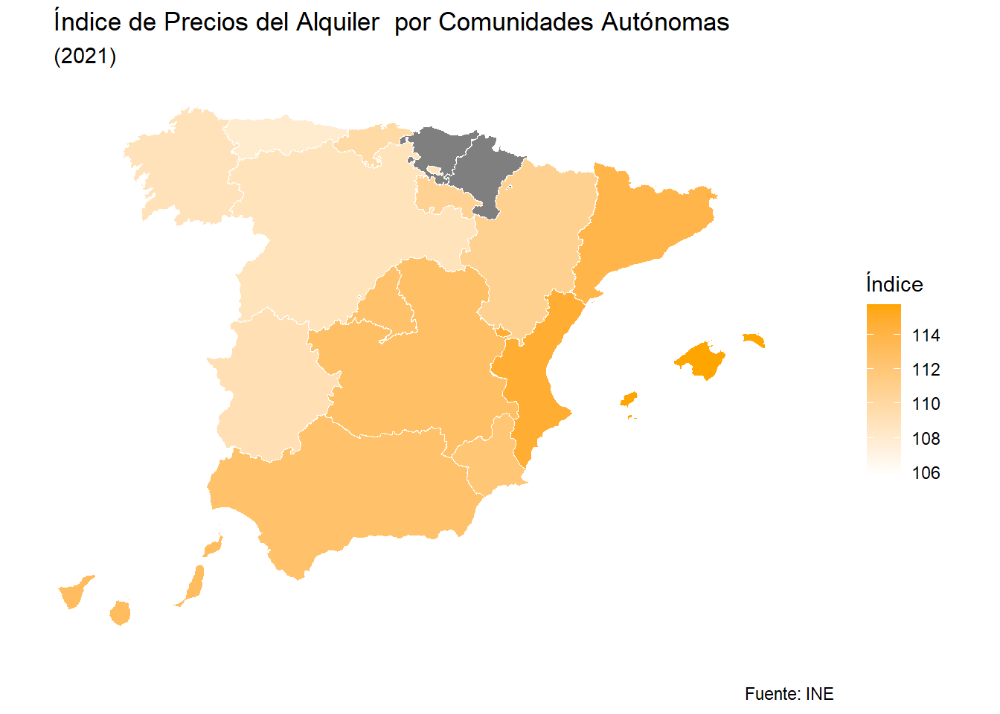

El tema del precio de la vivienda, en especial de los alquileres, es de gran preocupación para una gran parte de la población y más aún para los jóvenes. Son incontables las veces que hemos escuchado a la gente por la calle quejarse de lo caro que es permitirse una vivienda y más aún independizarse, son cada vez más el número de adultos jóvenes (entre 18 y 30 años) los que deciden quedarse viviendo en casa de sus padres aún cobrando un salario. Esto no es sorpresa alguna, pensemos que para un individuo el hecho de vivir con plena independencia de sus padres requiere la capacidad de costearse una serie de bienes y servicios imprescindibles tales como:
Su cesta de compra habitual.
Costes de carburante o transportes públicos.
El coste de la hipoteca o el alquiler de la vivienda en la que habita.
Coste de servicios recurrentes como el gimnasio, peluquero/barbero…
Gastos en ocio (como el consumo de bebidas alcohólicas o refrescos, cine, festivales o discotecas, viajes…)
En la siguiente gráfica podemos visualizar el grave empeoramiento de la tasa de emancipación a medida que han pasado los años.
Código
library(tidyverse)Df_eman <- rio::import("./datos/TASA DE EMANCIPACION.csv")Df_good <- Df_eman %>%mutate(Year =as.factor(Year)) %>%select(Year, Tasa)plot_eman <-ggplot(Df_good, aes(Year, Tasa)) +geom_line(group =1) +labs(title ="Tasa de emancipación para jóvenes de 18 -34 años.",x ="Año",y ="Tasa de emancipación",caption ="Fuente: datos.gob.es (Gobierno de España)." ) + ggthemes::theme_stata()plot_eman

¿Puede un sueldo promedio permitirse estos consumos?
Vamos a tomar como referencia el salario promedio en España y su evolución a lo largo de una serie temporal ( en este caso 2006 -2020).
Código
library(gganimate)library(tidyverse)library(plotly)library(patchwork)SALARIOS <- rio::import("./datos/datos_salariomedio.csv") %>%select(Año, Salariomedio) %>%drop_na() %>%mutate(Variacion =((Salariomedio -lag(Salariomedio))/lag(Salariomedio))*100)Evo_salarios <-ggplot(SALARIOS, aes(Año, Salariomedio)) +geom_line(aes(group =1), color ="aquamarine4", size =0.95) + ggthemes::theme_stata()Evo_salarios +labs(title ="Evolución del salario medio anual.",subtitle ="Serie 2006-2020.",y ="Salario medio (miles de euros)",caption ="Fuente: Epdata")

Como se puede observar en la gráfica de arriba, podemos identificar 2 etapas de fuerte crecimiento del salario promedio:
De 2006 a 2008
De 2014 a 2019
La primera es atribuile al periodo de fuerte expansión económica que experimentó la economía española durante el principio de los 2000 junto con el boom del ladrillo, mientras que la segunda se debe al periodo de fuerte recuperación económica tras los años de crisis.
Por otro lado, se puede observar una caída durante el periodo 2011 - 2014 debido al estallido de la crisis de 2008, se puede remarcar en ese mismo periodo (2008-2011) el estancamiento del salario promedio. No obstante, conviene visualizar estos datos también en tasas de crecimiento:
Código
Var_Salarios <-ggplot(SALARIOS, aes(Año, Variacion)) +geom_line(aes(group =1), color ="#53868B", size =0.95) + ggthemes::theme_stata()Var_Salarios +labs(title ="Crecimiento del salario medio.",subtitle ="Serie 2006-2020.",y ="Variación en porcentaje",caption ="Fuente: Epdata")

Teniendo en cuenta la evolución en tasas podemos fijarnos que la primera etapa de crecimiento del salario español mostraba una tendencia decreciente mientras que la segunda todo lo contrario. Las razones de este comportamiento son las mismas, ya que en el boom la economía española estaba creciendo por encima de su potencial y comenzaba a estancarse mientras que en un periodo de recuperación al estar alejados de nuestro potencial la tasa de crecimiento muestra tendencia creciente. Consideramos que es bastante obvia la caída del salario en 2020 debido a la pandemia covid, no es necesario desarrollar en este aspecto.
Volviendo a la pregunta principal con lo que hemos visto, si el crecimiento del salario medio español a lo largo de los últimos 20 años es similar o superior al del IPC, podemos afirmar que será capaz de cubrir los gastos necesarios para un individuo mencionados al principio. Sin embargo, no podemos asegurar esto último sin informarnos acerca del crecimiento de los precios de dichos bienes y servicios.
En la gráfica animada de arriba se nos ilustra el crecimiento del IPC en distintos grupos de bienes/servicios de consumo. Al mostrar una evolución de precios a lo largo de un periodo de 14 años, lo normal es que haya un crecimiento en el nivel de precios sostenido y a un ritmo bajo. No obstante, llama la atención el acusado crecimiento de los precios para las bebidas alcohólicas y tabaco (cuyas demandas se caracterizan por ser inelásticas) Y la enseñanza y la vivienda, debido a que su crecimiento se acelera al final del periodo. Para ser más precisos, observémos el comportamiento en tasas de crecimiento:
Los grupos que presentan una mayor volatilidad son el transporte y las bebidas alcohólicas y el tabaco. El comportamiento para la enseñanza y la medicina ha sido similar. Podemos resaltar que el grupo de alimentos y bebidas no alcohólicas han mostrado una evolución con fuertes caídas. El resto de grupos han mostrado una evolución adecuada en sus niveles de precios (crecimiento constante a tasas bajas).
COMPARATIVA EVOLUCIÓN SALARIO - PRECIOS
En primer lugar, el crecimiento del salario medio se ha ido estancando hasta llegar al crecimiento negativo (es decir, su reducción) pasando de tener una tasa del 7,5% a su punto más bajo de -2,5%. Una vez llega a ese suelo, se recupera hasta el 3,8% aproximadamente. Si a continuación nos fijamos en las tasas de crecimiento del IPC tanto general como por grupos, veremos que el crecimiento de los precios ha sido mayor que el de los salarios en términos relativos pues podemos observar cómo a lo largo del periodo el crecimiento ha oscilado entre bandas de 0 a 10%. En resumidas cuentas, el crecimiento del salario se ha ido estancando y ha tenido una leve recuperación a posteriori, la cual no es suficiente para soportar la evolución de los precios, resultando en una pérdida de poder adquisitivo para el ciudadanio promedio y por tanto dificultando la emancipación de los jóvenes.
CENTRÁNDONOS EN EL TEMA DE LA VIVIENDA
A la hora de hablar de la vivienda, es muy importante distinguir qué tipos de régimen de tenencia de la vivienda existen y en cuáles vamos a centrar para estudiar la evolución de sus precios. Vamos a exponer en el siguiente gráfico la distribución de la propiedad de la vivienda en sus distintos formatos para un conjunto de países europeos.
Distribución del régimen de tenencia de la vivienda en Europa.
Código
datos_europa<-"./datos/datos_europa.csv"datos_europa<- rio::import(datos_europa)datos_europa<- datos_europa %>%select(tenure,geo,OBS_VALUE)categorias<-c("OWN_L"="Propietario,\n con hipoteca o préstamo", "OWN_NL"="Propietario,\n sin hipoteca ni préstamo de vivienda pendiente", "RENT_FR"="Inquilino,\n alquiler a precio reducido o gratis", "RENT_MKT"="Inquilino,\n alquiler a precio de mercado")p<-ggplot(datos_europa, aes(x = geo, y = OBS_VALUE, fill = tenure)) +geom_col( position ="stack", color ="white") +labs(title ="Distribución de la tenencia de vivienda por países europeos (2018)", x ="País", y ="%", caption ="Fuente:Eurostat") + ggthemes::theme_stata() +theme(plot.title =element_text(size =16, hjust =0.5, face ="bold"),legend.key.size =unit(0.2,"cm"),axis.text.x =element_text(angle =45, hjust =1),legend.title =element_text(face ="bold"),legend.position ="bottom",panel.grid.major.y =element_blank(),panel.grid.minor.y =element_blank()) +scale_fill_brewer(palette ="Set3") p +scale_fill_manual(values =c("OWN_L"="blue", "OWN_NL"="red", "RENT_FR"="yellow", "RENT_MKT"="green" ), labels = categorias) +guides(fill =guide_legend( keywidth =0.5, keyheight =0.5, title.theme =element_text(size =5), label.theme =element_text(size =5)))

Como podemos observar para el año 2018, la distribución de viviendas en los Estados miembros de la Unión Europea mostró variaciones significativas. La mayoría de la población residía en propiedades, con tasas que iban desde el 51,4% en Alemania hasta el 96,4% en Rumanía. Curiosamente, Suiza destacó como una excepción, con un notable 57,5% de la población optando por el alquiler. En países como los Países Bajos (60,5%) y Suecia (51,7%), así como en Islandia (63,9%) y Noruega (60,1%), más del 50% de la población vivía en propiedades financiadas mediante préstamos o hipotecas. En cuanto al alquiler a precio de mercado, en 2018, menos del 10% de la población en once Estados miembros de la UE optaba por esta opción. Alemania (40,8%) y Dinamarca (39,4%) presentaban tasas significativamente más altas, mientras que Suiza lideraba con un notable 51,1%. A nivel general, la proporción de población que residía en viviendas de alquiler protegido o disfrutaba de viviendas gratuitas fue inferior al 20% en todos los Estados miembros de la UE y en los ocho países no miembros para los cuales se disponía de datos, sugiriendo una preferencia generalizada por la propiedad o formas de alquiler más estables.
En el caso de España, podemos observar como en su gran mayoría la ciudadanía es propietaria de vivienda, dentro de esta categoría los propietarios hipotecados no llegan a alcanzar la mitad. Sin embargo, el monto total de inquilinos es significativo llegando a representar un 25% del total aproximadamente.
Podemos observar la evolución de la distribución para España en años anteriores, destacando una reducción de la proporción de propietarios de vivienda que deriva en un aumento en la proporción de inquilinos. También podemos observar cómo en la proporción de inquilinos aumentan los que pagan el alquiler a precio de mercado. Es relevante señalar que, a pesar de estas variaciones, las viviendas en propiedad continúan representando la gran mayoría del total de viviendas a lo largo de los años, consolidándose como la opción dominante. En contraste, los alquileres de viviendas a precio inferior al de mercado constituyen una minoría, indicando una preferencia generalizada por la tenencia en propiedad.
Análisis de la vivienda en España
Ya tenemos una pequeña idea de cómo se distribuye la tenencia de viviendas en los países UE y de entre ellos España. Ahora vamos a hacer un análisis no muy extenso de la evolución de los precios tanto del alquiler como de la vivienda en términos de provincias y CCAA.
Evolución de los alquileres.
A la hora de estudiar el precio del alquiler, hemos tenido en consideración 2 factores: - EL TAMAÑO DE LAS VIVIENDAS - EL ÍNDICE GENERAL DE PRECIOS DEL ALQUILER DEL INE
Comenzando por el primero:
Código
datos <-"./datos/DATOS_VIVIENDA.xlsx"info <- rio::import(datos)df3 <- info %>%filter(COMUNIDAD =="Total nacional")p<-ggplot(df3,aes( AÑO, ÍNDICE,color = TAMAÑO)) +geom_line(size =0.95) + ggthemes::theme_stata() +labs(title ="Evolución del Índice general de precios de alquiler por tamaño de vivienda (2015 = 100).",subtitle ="serie 2011 - 2021",caption ="Fuente: INE")pp <-ggplotly(p)p_plotly <- pp %>%layout(legend =list(title ="Tamaño",font =list(family ="Arial", size =12 ),bgcolor ="white",bordercolor ="black",borderwidth =1,itemsizing ="constant" ) )p_plotly <- p_plotly %>%layout(annotations =list(list(text ="Fuente: INE",font =list(family ="Arial",size =10 ),x =1,y =-0.15,showarrow =FALSE,xref ="paper",yref ="paper",xanchor ="right",yanchor ="auto" ) ) )p_plotly
En la gráfica interactiva presente se nos presenta una relación muy peculiar entre el tamaño de la vivienda y el Índice de precios:
Las viviendas de menor tamaño han sufrido un crecimiento en sus precios muy superior al de las de mayor tamaño.
Esto a simple vista puede resultar sorprendente. ¿cómo es posible que las viviendas más pequeñas, que por tanto tienen menos habitaciones, baños y espacio en general, sean cada vez más caras a un ritmo mayor que las más grandes?. Debemos tener en cuenta que las viviendas de menor tamaño en España son generalmente edificios residenciales de pisos que están ubicados normalmente en zonas céntricas de las ciudades o en barrios que normalmente están bien conectados. Las viviendas de mayores tamaños requieren parcelas mayores las cuales se edifican en zonas más alejadas o zonas que están en plena construcción, las cuales tienen peor conexión con la ciudad y por tanto mayor dificultad de acceso a supermercados, colegios e institutos, hospitales… La demanda de viviendas de menor tamaño es mucho mayor que las de tamaños grandes debido a esto último y sobre todo a que la población general no cuenta con un poder adquisitivo tal que le permita la adquisición o el alquiler de viviendas de tamaños grandes.
Si ahora pasamos al análisis por CCAA y provincias…
Código
datos4<-"./datos/datos4.csv"datos4<- rio::import(datos4)p4<-ggplot(datos4, aes(x =reorder(Parámetro, -Cuantia_media), y = Cuantia_media)) +geom_bar(stat ="identity", fill ="skyblue") +labs(title ="Precio del Alquiler por provincia (2018)",x ="Provincia",y ="Precio medio Alquiler",caption ="Ministerio de Fomento, Gobierno de España") +theme_minimal() +theme(axis.text.x =element_text(angle =45, hjust =1))p4

En este contexto, el gráfico proporciona una visión detallada del precio medio del alquiler en diferentes provincias, destacando variaciones significativas en el coste mensual. En la provincia de Madrid, por ejemplo, se registra el precio más elevado, alcanzando los 819 euros mensuales, seguido de cerca por Barcelona con un promedio de 769 euros al mes. Por otro lado, en la provincia de Lugo se observa el precio más bajo, situándose en 336 euros al mes. Llama bastante la atención el fuerte salto en el precio del alquiler que se produce a medida que nos acercamos a las ciudades principales de España. Podemos comprobar que aquellas ciudades con menor población cuentan con precios más bajos de alquiler puesto que la mayoría de la demanda de viviendas se concentra en las ciudades grandes que cuentan con mayor variedad de servicios, oportunidades académicas y laborales, entre otros…
En esta otra gráfica se nos presenta una forma distinta de observar los datos sobre la evolución del IPC general de precios del alquiler, hemos distinguido entre 4 grupos:
El primero, que trata de reunir regiones más ubicadas al norte incluyendo Aragón. Siendo esta última comunidad la que ha presentado mayor crecimiento en su índice, hecho que podría atribuirse a la contribución en los precios agregados del alquiler de Aragón por parte de Zaragoza, una de las ciudades principales del país. El resto de CCAA que integran el grupo muestran un patrón similar pero con un crecimiento menor.
El segundo grupo reúne las CCAA más orientadas al centro de la península, destaca como la evolución para Extremadura y Castilla y León ha sido prácticamente igual.
El tercero reúne las CCAA que consideramos más relevantes. No nos esperábamos que la Comunidad Valenciana fuera la región cuyos alquileres fueran más elevados al final del periodo superando a Cataluña y Madrid.
Finalmente el último grupo contiene las islas y las ciudades autónomas. podemos destacar como el comportamiento tanto en Baleares como en Canarias es similar, pero los alquileres son más elevados en la primera debido probablemente a que percibe turistas de mayor poder adquisitivo en las temporadas de verano. Los alquileres en Ceuta y Melilla presentan los índices más bajos de todos.
Evolución de los precios de la vivienda.
Código
#######MAPAlibrary(sf)library(tidyverse)library(pjpv.curso.R.2022)###cargamos los datos datos_c<-"./datos/prueba.csv"datos_c<- rio::import(datos_c)### En la columna Total queremos poner un punto en vez de una coma datos_c <- datos_c%>%mutate(Total = stringr::str_replace(Total, "," , "." ))#- Cambiamos el nombre de las columnas df_c<- datos_c %>%rename(Indice_precio = Total) %>%rename(CCAA = Comunidades_Autonomas)###Separamos la columna de CCAA en dos Columnas, una que muestre el código y otra el nombre de la Comunidad Autonoma df_c <- df_c %>% tidyr::separate(CCAA, sep =" ",into =c("ine_ccaa", "ine_ccaa.n"), extra ="merge")df_c<-drop_na(df_c) #quitamos el total nacional, ya que no se van a utilizardf_c<- df_c %>%filter(General =="General") %>%filter( Índices_tasas =="Media anual") %>%filter(Periodo =="2022") ##cogemos las viviendas generales, la media anual y elegimos el año más reciente que es 2022###Cargamos las geometrías y elegimos las variables que nos interesandf_geo_prov <- pjpv.curso.R.2022::LAU2_prov_2020_canariasdf_geo_prov <- df_geo_prov %>%select(ine_prov, ine_prov.n, ine_ccaa, ine_ccaa.n)##Agregamos geometrías de las Comunidades Autonomas df_geo_ccaa <- df_geo_prov %>%group_by(ine_ccaa, ine_ccaa.n) %>%summarize()df_ok <-left_join(df_geo_ccaa, df_c, by =c("ine_ccaa"="ine_ccaa"))names(df_ok)#> [1] "ine_ccaa" "ine_ccaa.n.x" "geometry" "ine_ccaa.n.y" #> [5] "General" "Índices_tasas" "Periodo" "Indice_precio"##Calculamos los Centroideslibrary(sf)df_geo_ccaa <-cbind(df_geo_ccaa, st_coordinates(st_centroid(df_geo_ccaa$geometry)))##Juntamos los datos de los precios de los alquileres con las geometrías df_ok <-left_join(df_geo_ccaa, df_c, by =c("ine_ccaa"="ine_ccaa"))df_ok$Indice_precio <-as.numeric(df_ok$Indice_precio)p <-ggplot() +geom_sf(data = df_ok, aes(geometry = geometry, fill = Indice_precio), color ="white", size =0.09) +coord_sf(xlim =c(-10.00, 5.00), ylim =c(35, NA), expand =TRUE) +scale_fill_continuous(low="white",high="navyblue",limits =c(100,160)) +theme_minimal() +theme(panel.grid.major =element_blank(), panel.grid.minor =element_blank()) +theme(axis.title.x=element_blank(),axis.text.x=element_blank(),axis.ticks.x=element_blank(),axis.title.y=element_blank(),axis.text.y=element_blank(),axis.ticks.y=element_blank()) +labs(title ="Índice de Precios de la Vivienda por Comunidades Autónomas", subtitle ="(2022)",fill ="Índice",caption ="Fuente: INE")p

En el análisis gráfico previo (evolución de los regímenes de tenencia), hemos observado una marcada tendencia a lo largo de los años: La proporción de viviendas en propiedad ha disminuido a la par que las viviendas en alquiler han experimentado un aumento significativo. Esta transformación puede atribuirse principalmente al vertiginoso incremento de los precios de la vivienda, que ha afectado negativamente nuestro poder adquisitivo. La consecuencia directa de este fenómeno es la dificultad creciente para adquirir una vivienda propia, obligando a un número cada vez mayor de personas a optar por la alternativa del alquiler. Con el objetivo de profundizar en estas disparidades, hemos confeccionado un mapa que ilustra el Índice de Precios de la Vivienda por Comunidades para el año 2022. Este enfoque nos brinda la oportunidad de examinar las divergencias en los precios de la vivienda a nivel regional. En la observación detallada del mapa, se destaca que las Comunidades Autónomas con los precios de vivienda más elevados son la Comunidad de Madrid, Islas Baleares y Cataluña, las. Por otro lado, aquellas regiones donde el coste de la vivienda es más bajo incluyen Extremadura, Castilla-La Mancha y Navarra. Este análisis geográfico proporciona una visión más completa de las disparidades en los precios de la vivienda, destacando las áreas donde la propiedad se presenta como una inversión más onerosa y aquellas donde la adquisición de una vivienda podría ser más accesible. La información recopilada sugiere una correlación entre el aumento de los precios de la vivienda y el cambio en la tendencia hacia el alquiler, reflejando las complejidades económicas y sociales que inciden en las decisiones de vivienda de la población.
Código
##Otro Mapa pero ahora del Indice de Precios de Alquiler datos_alquiler<-"./datos/59057.csv"datos_alquiler<- rio::import(datos_alquiler)##Cambiamos la coma por el punto en la columna Totaldatos_alquiler<- datos_alquiler%>%mutate(Total = stringr::str_replace(Total, "," , "." ))##Separamos la columna de CCAA en dos Columnas, una que muestre el código y otra el nombre de la Comunidad Autonoma datos_alquiler <- datos_alquiler %>% tidyr::separate(CCAA, sep =" ",into =c("ine_ccaa", "ine_ccaa.n"), extra ="merge") ##Quitamos Total Nacional (que no lo necesitamos)datos_alquiler<-drop_na(datos_alquiler)##Cogemos las variables que nos interesan, filtramos por Indice y filtramos por el año 2021(es el más reciente)datos_alquiler<- datos_alquiler %>%filter(Tamaño =="Total") %>%filter(Dato =="Índice") %>%filter(Periodo ==2021) %>%select(ine_ccaa, ine_ccaa.n, Total)###Cargamos las geometrías y elegimos las variables que nos interesandf_geo_prov <- pjpv.curso.R.2022::LAU2_prov_2020_canariasdf_geo_prov <- df_geo_prov %>%select(ine_prov, ine_prov.n, ine_ccaa, ine_ccaa.n)##Agregamos geometrías de las Comunidades Autonomas df_geo_ccaa <- df_geo_prov %>%group_by(ine_ccaa, ine_ccaa.n) %>%summarize() df_ok <-left_join(df_geo_ccaa, datos_alquiler, by =c("ine_ccaa"="ine_ccaa"))names(df_ok)#> [1] "ine_ccaa" "ine_ccaa.n.x" "geometry" "ine_ccaa.n.y" "Total"##Calculamos los Centroideslibrary(sf)df_geo_ccaa <-cbind(df_geo_ccaa, st_coordinates(st_centroid(df_geo_ccaa$geometry)))##Juntamos los datos de los precios de los alquileres con las geometrías df_ok <-left_join(df_geo_ccaa, datos_alquiler, by =c("ine_ccaa"="ine_ccaa"))##Gráficodf_ok$Total <-as.numeric(df_ok$Total)p <-ggplot() +geom_sf(data = df_ok, aes(geometry = geometry, fill = Total), color ="white", size =0.09) +coord_sf(xlim =c(-10.00, 5.00), ylim =c(35, NA), expand =TRUE) +scale_fill_continuous(low="white",high="orange") +theme_minimal() +theme(panel.grid.major =element_blank(), panel.grid.minor =element_blank()) +theme(axis.title.x=element_blank(),axis.text.x=element_blank(),axis.ticks.x=element_blank(),axis.title.y=element_blank(),axis.text.y=element_blank(),axis.ticks.y=element_blank()) +labs(title ="Índice de Precios del Alquiler por Comunidades Autónomas", subtitle ="(2021)",fill ="Índice",caption ="Fuente: INE")p

En la actualidad, la disparidad en los precios de alquiler entre distintas Comunidades Autónomas ha emergido como un tema de gran controversia. Con el objetivo de visualizar y comprender estas divergencias, hemos desarrollado un mapa interactivo que exhibe el Índice de Precio de Alquiler por Comunidades Autónomas durante el año 2021. Los resultados del análisis revelan que existen notables variaciones en los costes de alquiler a lo largo y ancho de España. En particular, Comunidades Autónomas como Asturias, Castilla y León, Galicia y Extremadura destacan por presentar precios de alquiler más accesibles. Este fenómeno podría estar vinculado a factores como una menor demanda relativa, una oferta más abundante o características socioeconómicas específicas de estas regiones. Contrastando con esta tendencia, las Comunidades Autónomas de las Islas Baleares, la Comunidad Valenciana, Cataluña, las Islas Canarias, Castilla La Mancha y la Comunidad Madrid se posicionan como las zonas con precios de alquiler más elevados. En estos casos, factores como la alta demanda derivada de zonas turísticas, una robusta actividad económica, y la concentración de empleo y servicios urbanos podrían estar contribuyendo a esta tendencia al alza en los precios.
CONCLUSIÓN
En conclusión, la dificultad para acceder a una vivienda independiente se ha convertido en un problema creciente, evidenciado por el aumento de adultos jóvenes que optan por quedarse en casa de sus padres a pesar de tener un salario.
Al analizar la evolución del salario promedio en España a lo largo de las últimas dos décadas, se observa que, aunque ha experimentado periodos de crecimiento, este crecimiento no ha sido suficiente para mantener el ritmo de los aumentos en los precios de bienes y servicios esenciales. En particular, los precios de la vivienda y otros elementos importantes, como la educación, han experimentado aumentos notables superando el crecimiento de los salarios.
En cuanto al tema de la vivienda destaca la preferencia generalizada por la propiedad en España, pero se observa una tendencia al alza en la proporción de personas que optan por el alquiler. Esta transformación se atribuye en gran medida al aumento vertiginoso de los precios de la vivienda, lo que ha afectado negativamente el poder adquisitivo y ha llevado a un número creciente de personas a elegir la opción del alquiler.
El análisis de la evolución de los precios de alquiler por regiones revela disparidades significativas, con ciertas Comunidades Autónomas presentando precios mucho más elevados que otras. Este fenómeno puede estar relacionado con factores como la demanda relativa, la oferta de viviendas y características socioeconómicas específicas de cada región.
En resumen, la dificultad para acceder a una vivienda independiente en España se ve exacerbada por el desajuste entre el crecimiento de los salarios y el aumento de los precios de la vivienda y otros servicios esenciales. La preferencia por la propiedad persiste, pero el alquiler se ha vuelto más relevante, especialmente en ciertas regiones con precios elevados. Este panorama presenta desafíos significativos para la emancipación de los jóvenes y plantea interrogantes sobre la eficiencia del mercado de viviendas en el país.
Ejecutar el código
---title: "Evolución y análisis del precio del alquiler en España."description: | Un tema muy candente en la actualidad.author: - Javier Belenguer Esteban (besja@alumni.uv.es)\n - Juan Bosco Pujol Cerdá (pucer@alumni.uv.es)\ndate: 2023-12-06 #--categories: [trabajo BigData, Alquileres] #--image: "./images/houses-logo-illustration-free-vector.jpg"title-block-banner: true #- {true, false, "green","#AA0000"}title-block-banner-color: "white" #-"#FFFFFF" toc-depth: 3smooth-scroll: trueformat: html: #embed-resources: true link-external-newwindow: true #css: ./assets/my_css_file.css #- CUIDADO!!!!code-tools: truecode-link: true---## ¿POR QUÉ ESTE TEMA Y PARA QUÉ?El tema del precio de la vivienda, en especial de los alquileres, es de gran preocupación para una gran parte de la población y más aún para los jóvenes. Son incontables las veces que hemos escuchado a la gente por la calle quejarse de lo caro que es permitirse una vivienda y más aún independizarse, son cada vez más el número de adultos jóvenes (entre 18 y 30 años) los que deciden quedarse viviendo en casa de sus padres aún cobrando un salario. Esto no es sorpresa alguna, pensemos que para un individuo el hecho de vivir con plena independencia de sus padres requiere la capacidad de costearse una serie de bienes y servicios imprescindibles tales como:- Su cesta de compra habitual.- Costes de carburante o transportes públicos.- El coste de la hipoteca o el alquiler de la vivienda en la que habita.- Coste de servicios recurrentes como el gimnasio, peluquero/barbero...- Gastos en ocio (como el consumo de bebidas alcohólicas o refrescos, cine, festivales o discotecas, viajes...)En la siguiente gráfica podemos visualizar el grave empeoramiento de la tasa de emancipación a medida que han pasado los años.```{r}library(tidyverse)Df_eman <- rio::import("./datos/TASA DE EMANCIPACION.csv")Df_good <- Df_eman %>%mutate(Year =as.factor(Year)) %>%select(Year, Tasa)plot_eman <-ggplot(Df_good, aes(Year, Tasa)) +geom_line(group =1) +labs(title ="Tasa de emancipación para jóvenes de 18 -34 años.",x ="Año",y ="Tasa de emancipación",caption ="Fuente: datos.gob.es (Gobierno de España)." ) + ggthemes::theme_stata()plot_eman```### ¿Puede un sueldo promedio permitirse estos consumos?Vamos a tomar como referencia el salario promedio en España y su evolución a lo largo de una serie temporal ( en este caso 2006 -2020).```{r}library(gganimate)library(tidyverse)library(plotly)library(patchwork)SALARIOS <- rio::import("./datos/datos_salariomedio.csv") %>%select(Año, Salariomedio) %>%drop_na() %>%mutate(Variacion =((Salariomedio -lag(Salariomedio))/lag(Salariomedio))*100)Evo_salarios <-ggplot(SALARIOS, aes(Año, Salariomedio)) +geom_line(aes(group =1), color ="aquamarine4", size =0.95) + ggthemes::theme_stata()Evo_salarios +labs(title ="Evolución del salario medio anual.",subtitle ="Serie 2006-2020.",y ="Salario medio (miles de euros)",caption ="Fuente: Epdata")```Como se puede observar en la gráfica de arriba, podemos identificar 2 etapas de fuerte crecimiento del salario promedio:- De 2006 a 2008- De 2014 a 2019La primera es atribuile al periodo de fuerte expansión económica que experimentó la economía española durante el principio de los 2000 junto con el boom del ladrillo, mientras que la segunda se debe al periodo de fuerte recuperación económica tras los años de crisis.Por otro lado, se puede observar una caída durante el periodo 2011 - 2014 debido al estallido de la crisis de 2008, se puede remarcar en ese mismo periodo (2008-2011) el estancamiento del salario promedio. No obstante, conviene visualizar estos datos también en tasas de crecimiento:```{r}Var_Salarios <-ggplot(SALARIOS, aes(Año, Variacion)) +geom_line(aes(group =1), color ="#53868B", size =0.95) + ggthemes::theme_stata()Var_Salarios +labs(title ="Crecimiento del salario medio.",subtitle ="Serie 2006-2020.",y ="Variación en porcentaje",caption ="Fuente: Epdata")```Teniendo en cuenta la evolución en tasas podemos fijarnos que la primera etapa de crecimiento del salario español mostraba una tendencia decreciente mientras que la segunda todo lo contrario. Las razones de este comportamiento son las mismas, ya que en el boom la economía española estaba creciendo por encima de su potencial y comenzaba a estancarse mientras que en un periodo de recuperación al estar alejados de nuestro potencial la tasa de crecimiento muestra tendencia creciente. Consideramos que es bastante obvia la caída del salario en 2020 debido a la pandemia covid, no es necesario desarrollar en este aspecto.Volviendo a la pregunta principal con lo que hemos visto, si el crecimiento del salario medio español a lo largo de los últimos 20 años es similar o superior al del IPC, podemos afirmar que será capaz de cubrir los gastos necesarios para un individuo mencionados al principio. Sin embargo, no podemos asegurar esto último sin informarnos acerca del crecimiento de los precios de dichos bienes y servicios.```{r}library(gganimate)library(tidyverse)IPC<- rio::import("./datos/ipc_bueno.csv")df_IPC <- IPC %>%rename(IPC = indice_precios_consumo_tasas_variacion) %>%select(indicadores,grupos_coicop_nombre,provincias_nombre,periodos_id,IPC) %>%filter(periodos_id %in%c("2002M01","2003M01","2004M01","2005M01","2006M01","2007M01","2008M01","2009M01","2010M01","2011M01","2012M01","2013M01","2014M01","2015M01","2016M01"))df_IPC_valores <- df_IPC %>%filter(indicadores =="Índices") %>%filter(provincias_nombre =="España") %>%mutate(periodos_id =as.Date(paste0(substr(periodos_id, 1, 4), substr(periodos_id, 6, 7), "-01"), format ="%Y%m-%d"))plot_IPC_valores <-ggplot(df_IPC_valores, aes(periodos_id, IPC, group = grupos_coicop_nombre, color = grupos_coicop_nombre)) +geom_line(size =0.9) + ggthemes::theme_stata() +theme(axis.text.x =element_text(angle =75, hjust =1, vjust =1, size =5, margin =margin(r =5, b =5, l =5)),axis.text.y =element_text(size =5),panel.spacing =unit(0.75, "lines"),legend.title =element_text(size =8),legend.key.size =unit(1, "cm"),legend.key.height =unit(1, "cm"),legend.key.width =unit(0.1,"cm"),legend.direction ="vertical",legend.position ="none") +labs(title ="Evolución IPC por grupos COICOP",subtitle ="Serie 2002 - 2016",x ="Periodo",y ="IPC",caption ="Fuente: datos.gob.es (Gobierno de España)",color ="Grupos COICOP" ) +facet_wrap(vars(grupos_coicop_nombre),nrow =4,ncol =4,labeller =labeller(grupos_coicop_nombre =function(label) str_wrap(label, width =20))) +theme(strip.text =element_text(size =8))plot_animado <- plot_IPC_valores +transition_reveal(periodos_id) +view_follow(fixed_y =TRUE)plot_animado```En la gráfica animada de arriba se nos ilustra el crecimiento del IPC en distintos grupos de bienes/servicios de consumo. Al mostrar una evolución de precios a lo largo de un periodo de 14 años, lo normal es que haya un crecimiento en el nivel de precios sostenido y a un ritmo bajo. No obstante, llama la atención el acusado crecimiento de los precios para las **bebidas alcohólicas y tabaco** (cuyas demandas se caracterizan por ser inelásticas) Y la **enseñanza** y la **vivienda**, debido a que su crecimiento se acelera al final del periodo. Para ser más precisos, observémos el comportamiento en tasas de crecimiento:```{r}library(gganimate)library(tidyverse)IPC<- rio::import("./datos/ipc_bueno.csv")df_IPC <- IPC %>%rename(IPC = indice_precios_consumo_tasas_variacion) %>%select(indicadores,grupos_coicop_nombre,provincias_nombre,periodos_id,IPC) %>%filter(periodos_id %in%c("2002M01","2003M01","2004M01","2005M01","2006M01","2007M01","2008M01","2009M01","2010M01","2011M01","2012M01","2013M01","2014M01","2015M01","2016M01"))df_IPC_valores <- df_IPC %>%filter(indicadores =="Índices") %>%filter(provincias_nombre =="España") %>%mutate(periodos_id =as.Date(paste0(substr(periodos_id, 1, 4), substr(periodos_id, 6, 7), "-01"), format ="%Y%m-%d"))df_IPC_tasas <- df_IPC %>%filter(indicadores =="Tasas de variación anual") %>%filter(provincias_nombre =="España") %>%mutate(periodos_id =as.Date(paste0(substr(periodos_id, 1, 4), substr(periodos_id, 6, 7), "-01"), format ="%Y%m-%d"))plot_IPC_tasas <-ggplot(df_IPC_tasas, aes(periodos_id, IPC, group = grupos_coicop_nombre, color = grupos_coicop_nombre)) +geom_line(size =0.9) + ggthemes::theme_stata() +theme(axis.text.x =element_text(angle =75, hjust =1, vjust =1, size =5, margin =margin(r =5, b =5, l =5)),axis.text.y =element_text(size =5),panel.spacing =unit(0.75, "lines"),legend.title =element_text(size =8),legend.key.size =unit(1, "cm"),legend.key.height =unit(1, "cm"),legend.key.width =unit(0.1,"cm"),legend.direction ="vertical",legend.position ="none") +labs(title ="Evolución IPC en tasas por grupos COICOP",subtitle ="Serie 2002 - 2016",x =NULL,y ="Var. IPC",caption ="Fuente: datos.gob.es (Gobierno de España)",color ="Grupos COICOP" ) +facet_wrap(vars(grupos_coicop_nombre),nrow =4,ncol =4,labeller =labeller(grupos_coicop_nombre =function(label) str_wrap(label, width =20))) +theme(strip.text =element_text(size =8))plot_IPC_tasas_animado <- plot_IPC_tasas +transition_reveal(periodos_id) +view_follow(fixed_y =TRUE)plot_IPC_tasas_animado```Los grupos que presentan una mayor volatilidad son el transporte y las bebidas alcohólicas y el tabaco. El comportamiento para la enseñanza y la medicina ha sido similar. Podemos resaltar que el grupo de alimentos y bebidas no alcohólicas han mostrado una evolución con fuertes caídas. El resto de grupos han mostrado una evolución adecuada en sus niveles de precios (crecimiento constante a tasas bajas).*COMPARATIVA EVOLUCIÓN SALARIO - PRECIOS*En primer lugar, el crecimiento del salario medio se ha ido estancando hasta llegar al crecimiento negativo (es decir, su reducción) pasando de tener una tasa del 7,5% a su punto más bajo de -2,5%. Una vez llega a ese suelo, se recupera hasta el 3,8% aproximadamente. Si a continuación nos fijamos en las tasas de crecimiento del IPC tanto general como por grupos, veremos que el crecimiento de los precios ha sido mayor que el de los salarios en términos relativos pues podemos observar cómo a lo largo del periodo el crecimiento ha oscilado entre bandas de 0 a 10%. En resumidas cuentas, el crecimiento del salario se ha ido estancando y ha tenido una leve recuperación a posteriori, la cual no es suficiente para soportar la evolución de los precios, resultando en una pérdida de poder adquisitivo para el ciudadanio promedio y por tanto dificultando la emancipación de los jóvenes.## CENTRÁNDONOS EN EL TEMA DE LA VIVIENDAA la hora de hablar de la vivienda, es muy importante distinguir qué tipos de régimen de tenencia de la vivienda existen y en cuáles vamos a centrar para estudiar la evolución de sus precios. Vamos a exponer en el siguiente gráfico la distribución de la propiedad de la vivienda en sus distintos formatos para un conjunto de países europeos.### Distribución del régimen de tenencia de la vivienda en Europa.```{r}datos_europa<-"./datos/datos_europa.csv"datos_europa<- rio::import(datos_europa)datos_europa<- datos_europa %>%select(tenure,geo,OBS_VALUE)categorias<-c("OWN_L"="Propietario,\n con hipoteca o préstamo", "OWN_NL"="Propietario,\n sin hipoteca ni préstamo de vivienda pendiente", "RENT_FR"="Inquilino,\n alquiler a precio reducido o gratis", "RENT_MKT"="Inquilino,\n alquiler a precio de mercado")p<-ggplot(datos_europa, aes(x = geo, y = OBS_VALUE, fill = tenure)) +geom_col( position ="stack", color ="white") +labs(title ="Distribución de la tenencia de vivienda por países europeos (2018)", x ="País", y ="%", caption ="Fuente:Eurostat") + ggthemes::theme_stata() +theme(plot.title =element_text(size =16, hjust =0.5, face ="bold"),legend.key.size =unit(0.2,"cm"),axis.text.x =element_text(angle =45, hjust =1),legend.title =element_text(face ="bold"),legend.position ="bottom",panel.grid.major.y =element_blank(),panel.grid.minor.y =element_blank()) +scale_fill_brewer(palette ="Set3") p +scale_fill_manual(values =c("OWN_L"="blue", "OWN_NL"="red", "RENT_FR"="yellow", "RENT_MKT"="green" ), labels = categorias) +guides(fill =guide_legend( keywidth =0.5, keyheight =0.5, title.theme =element_text(size =5), label.theme =element_text(size =5)))```Como podemos observar para el año 2018, la distribución de viviendas en los Estados miembros de la Unión Europea mostró variaciones significativas. La mayoría de la población residía en propiedades, con tasas que iban desde el 51,4% en Alemania hasta el 96,4% en Rumanía. Curiosamente, Suiza destacó como una excepción, con un notable 57,5% de la población optando por el alquiler.En países como los Países Bajos (60,5%) y Suecia (51,7%), así como en Islandia (63,9%) y Noruega (60,1%), más del 50% de la población vivía en propiedades financiadas mediante préstamos o hipotecas.En cuanto al alquiler a precio de mercado, en 2018, menos del 10% de la población en once Estados miembros de la UE optaba por esta opción. Alemania (40,8%) y Dinamarca (39,4%) presentaban tasas significativamente más altas, mientras que Suiza lideraba con un notable 51,1%.A nivel general, la proporción de población que residía en viviendas de alquiler protegido o disfrutaba de viviendas gratuitas fue inferior al 20% en todos los Estados miembros de la UE y en los ocho países no miembros para los cuales se disponía de datos, sugiriendo una preferencia generalizada por la propiedad o formas de alquiler más estables.En el caso de España, podemos observar como en su gran mayoría la ciudadanía es *propietaria* de vivienda, dentro de esta categoría los propietarios hipotecados no llegan a alcanzar la mitad. Sin embargo, el monto total de inquilinos es significativo llegando a representar un 25% del total aproximadamente.```{r}######gráfico pastel##Cargamos los datos d_tenencia<-"./datos/regimen_tenencia.csv"d_tenencia<- rio::import(d_tenencia)##Cambiamos la coma por el punto en la columna Totald_tenencia <- d_tenencia%>%mutate(Total = stringr::str_replace(Total, "," , "." ))str(d_tenencia)d_tenencia$Total <-as.numeric(d_tenencia$Total)Propiedad <- d_tenencia%>%filter (Regimen_tenencia =="Propiedad") %>%filter (CCAA =="Total Nacional") %>%group_by(Periodo, Regimen_tenencia) Alquiler_precio_mercado<- d_tenencia %>%filter(Regimen_tenencia =="Alquiler a precio de mercado") %>%group_by(Periodo, Regimen_tenencia)Alquiler_inferior_precio<- d_tenencia %>%filter(Regimen_tenencia =="Alquiler inferior al precio de mercado") %>%group_by(Periodo, Regimen_tenencia)Cesion<- d_tenencia %>%filter(Regimen_tenencia =="Cesión") %>%group_by(Periodo, Regimen_tenencia)df_combined <- Propiedad %>%full_join(Alquiler_precio_mercado) %>%full_join(Alquiler_inferior_precio) %>%full_join(Cesion) %>%filter(CCAA=="Total Nacional") df_ordenado <- df_combined %>%arrange(Periodo)df_04 <- df_ordenado %>%filter (Periodo ==2004)%>%filter(CCAA =="Total Nacional") %>%mutate(Total_2decimales =round(Total, 2),csum =rev(cumsum(rev(Total_2decimales))),posicion = Total_2decimales/2+lead(csum, 1))%>%mutate(posicion =ifelse(is.na(posicion), Total_2decimales/2, posicion))df_08 <- df_ordenado %>%filter (Periodo ==2008)%>%filter(CCAA=="Total Nacional") %>%mutate(Total_2decimales =round(Total, 2),csum =rev(cumsum(rev(Total_2decimales))),posicion = Total_2decimales/2+lead(csum, 1))%>%mutate(posicion =ifelse(is.na(posicion), Total_2decimales/2, posicion))df_10 <- df_ordenado %>%filter (Periodo ==2010)%>%filter(CCAA =="Total Nacional") %>%mutate(Total_2decimales =round(Total, 2),csum =rev(cumsum(rev(Total_2decimales))),posicion = Total_2decimales/2+lead(csum, 1))%>%mutate(posicion =ifelse(is.na(posicion), Total_2decimales/2, posicion))df_17 <- df_ordenado %>%filter (Periodo ==2017)%>%filter(CCAA=="Total Nacional")%>%mutate(Total_2decimales =round(Total, 2),csum =rev(cumsum(rev(Total_2decimales))),posicion = Total_2decimales/2+lead(csum, 1))%>%mutate(posicion =ifelse(is.na(posicion), Total_2decimales/2, posicion))library(ggrepel)p_2004 <-ggplot(df_04, aes(x ="", y = Total, fill =fct_inorder(Regimen_tenencia))) +geom_col(width =1) +labs(fill =NULL) +coord_polar(theta ="y") +scale_fill_brewer(palette ="Set3") +geom_text(data = df_04,aes(y = Total, label =paste0(Total, "%")),position =position_stack(vjust =0.5),size =4, show.legend =FALSE) +theme_void() +theme(legend.position ="none")p_2008 <-ggplot(df_08, aes(x ="", y = Total, fill =fct_inorder(Regimen_tenencia))) +geom_col(width =1) +labs(fill =NULL) +coord_polar(theta ="y") +scale_fill_brewer(palette ="Set3") +geom_text(data = df_08,aes(y = Total, label =paste0(Total, "%")),position =position_stack(vjust =0.5), # Ajuste verticalsize =4, show.legend =FALSE) +theme_void()p_2010 <-ggplot(df_10, aes(x ="", y = Total, fill =fct_inorder(Regimen_tenencia))) +geom_col(width =1) +labs(fill =NULL) +coord_polar(theta ="y") +scale_fill_brewer(palette ="Set3") +geom_text(data = df_10,aes(y = Total, label =paste0(Total, "%")),position =position_stack(vjust =0.5), # Ajuste verticalsize =4, show.legend =FALSE) +theme_void() +theme(legend.position ="none")p_2017<-ggplot(df_17, aes(x ="", y = Total, fill =fct_inorder(Regimen_tenencia))) +geom_col(width =1) +labs(fill =NULL) +coord_polar(theta ="y") +scale_fill_brewer(palette ="Set3") +geom_text(data = df_17,aes(y = Total, label =paste0(Total, "%")),position =position_stack(vjust =0.5),size =4, show.legend =FALSE) +theme_void() +theme(legend.position ="none")library(patchwork)combined_plot <- p_2004 + p_2008 + p_2010 + p_2017 +plot_annotation(title =" Evolución de la tenencia de la vivienda en España (%).",subtitle ="(2004,2008,2010,2017)",caption ="Fuente: INE" )combined_plot```Podemos observar la evolución de la distribución para España en años anteriores, destacando una reducción de la proporción de propietarios de vivienda que deriva en un aumento en la proporción de inquilinos. También podemos observar cómo en la proporción de inquilinos aumentan los que pagan el alquiler a precio de mercado. Es relevante señalar que, a pesar de estas variaciones, las viviendas en propiedad continúan representando la gran mayoría del total de viviendas a lo largo de los años, consolidándose como la opción dominante. En contraste, los alquileres de viviendas a precio inferior al de mercado constituyen una minoría, indicando una preferencia generalizada por la tenencia en propiedad.### Análisis de la vivienda en EspañaYa tenemos una pequeña idea de cómo se distribuye la tenencia de viviendas en los países UE y de entre ellos España. Ahora vamos a hacer un análisis no muy extenso de la evolución de los precios tanto del alquiler como de la vivienda en términos de provincias y CCAA.### Evolución de los alquileres.A la hora de estudiar el precio del alquiler, hemos tenido en consideración 2 factores:- EL TAMAÑO DE LAS VIVIENDAS- EL ÍNDICE GENERAL DE PRECIOS DEL ALQUILER DEL INEComenzando por el primero:```{r}datos <-"./datos/DATOS_VIVIENDA.xlsx"info <- rio::import(datos)df3 <- info %>%filter(COMUNIDAD =="Total nacional")p<-ggplot(df3,aes( AÑO, ÍNDICE,color = TAMAÑO)) +geom_line(size =0.95) + ggthemes::theme_stata() +labs(title ="Evolución del Índice general de precios de alquiler por tamaño de vivienda (2015 = 100).",subtitle ="serie 2011 - 2021",caption ="Fuente: INE")pp <-ggplotly(p)p_plotly <- pp %>%layout(legend =list(title ="Tamaño",font =list(family ="Arial", size =12 ),bgcolor ="white",bordercolor ="black",borderwidth =1,itemsizing ="constant" ) )p_plotly <- p_plotly %>%layout(annotations =list(list(text ="Fuente: INE",font =list(family ="Arial",size =10 ),x =1,y =-0.15,showarrow =FALSE,xref ="paper",yref ="paper",xanchor ="right",yanchor ="auto" ) ) )p_plotly```En la gráfica interactiva presente se nos presenta una relación muy peculiar entre el tamaño de la vivienda y el Índice de precios:- *Las viviendas de menor tamaño han sufrido un crecimiento en sus precios muy superior al de las de mayor tamaño*.Esto a simple vista puede resultar sorprendente. ¿cómo es posible que las viviendas más pequeñas, que por tanto tienen menos habitaciones, baños y espacio en general, sean cada vez más caras a un ritmo mayor que las más grandes?.Debemos tener en cuenta que las viviendas de menor tamaño en España son generalmente edificios residenciales de pisos que están ubicados normalmente en zonas céntricas de las ciudades o en barrios que normalmente están bien conectados. Las viviendas de mayores tamaños requieren parcelas mayores las cuales se edifican en zonas más alejadas o zonas que están en plena construcción, las cuales tienen peor conexión con la ciudad y por tanto mayor dificultad de acceso a supermercados, colegios e institutos, hospitales...La demanda de viviendas de menor tamaño es mucho mayor que las de tamaños grandes debido a esto último y sobre todo a que la población general no cuenta con un poder adquisitivo tal que le permita la adquisición o el alquiler de viviendas de tamaños grandes.Si ahora pasamos al análisis por CCAA y provincias...```{r}datos4<-"./datos/datos4.csv"datos4<- rio::import(datos4)p4<-ggplot(datos4, aes(x =reorder(Parámetro, -Cuantia_media), y = Cuantia_media)) +geom_bar(stat ="identity", fill ="skyblue") +labs(title ="Precio del Alquiler por provincia (2018)",x ="Provincia",y ="Precio medio Alquiler",caption ="Ministerio de Fomento, Gobierno de España") +theme_minimal() +theme(axis.text.x =element_text(angle =45, hjust =1))p4```En este contexto, el gráfico proporciona una visión detallada del precio medio del alquiler en diferentes provincias, destacando variaciones significativas en el coste mensual. En la provincia de Madrid, por ejemplo, se registra el precio más elevado, alcanzando los 819 euros mensuales, seguido de cerca por Barcelona con un promedio de 769 euros al mes. Por otro lado, en la provincia de Lugo se observa el precio más bajo, situándose en 336 euros al mes.Llama bastante la atención el fuerte salto en el precio del alquiler que se produce a medida que nos acercamos a las ciudades principales de España. Podemos comprobar que aquellas ciudades con menor población cuentan con precios más bajos de alquiler puesto que la mayoría de la demanda de viviendas se concentra en las ciudades grandes que cuentan con mayor variedad de servicios, oportunidades académicas y laborales, entre otros...```{r}coloresg1 <-c("#66CDAA","#A52A2A","#53868B","#458B00")coloresg2 <-c("darkgoldenrod3","#9A32CD", "deeppink3", "#EEEE00")coloresg3 <-c("#8B7E66", "#00FF7F", "#7FFF00","#00BFFF","#FF3030", "darkslategray")coloresg4 <-c("#EEC900","darkseagreen4", "#CD5555", "#EEA2AD")df_cca1 <- info %>%pivot_wider(names_from = TAMAÑO, values_from = ÍNDICE) %>%filter(COMUNIDAD %in%c("06 Cantabria", "02 Aragón", "03 Principado de Asturias", "12 Galicia"))df_cca2 <- info %>%pivot_wider(names_from = TAMAÑO, values_from = ÍNDICE) %>%filter(COMUNIDAD %in%c("07 Castilla y León", "08 Castilla La Mancha", "15 La Rioja", "11 Extremadura"))df_cca3 <- info %>%pivot_wider(names_from = TAMAÑO, values_from = ÍNDICE) %>%filter(COMUNIDAD %in%c("10 Comunitat Valenciana", "01 Andalucía", "13 Comunidad de Madrid", "14 Región de Murcia", "09 Cataluña"))df_cca4 <- info %>%pivot_wider(names_from = TAMAÑO, values_from = ÍNDICE) %>%filter(COMUNIDAD %in%c("16 Ceuta", "17 Melilla", "04 Illes Balears", "05 Canarias"))CCAAg1<-ggplot(df_cca1,aes( AÑO, General,color = COMUNIDAD)) +geom_line(size =0.95) +scale_color_manual(values = coloresg1) +labs(y ="IPC") + ggthemes::theme_stata() CCAAg2<-ggplot(df_cca2,aes( AÑO, General,color = COMUNIDAD)) +geom_line(size =0.95) +scale_color_manual(values = coloresg2) +labs(color =NULL,y ="IPC") + ggthemes::theme_stata()CCAAg3<-ggplot(df_cca3,aes( AÑO, General,color = COMUNIDAD)) +geom_line(size =0.95) +scale_color_manual(values = coloresg3) +labs(color =NULL,y ="IPC") + ggthemes::theme_stata() CCAAg4<-ggplot(df_cca4,aes( AÑO, General,color = COMUNIDAD)) +geom_line(size =0.95) +scale_color_manual(values = coloresg4) +labs(color =NULL,y ="IPC") + ggthemes::theme_stata() PLOT_CONJUNTO <- ((CCAAg1 + CCAAg2) / (CCAAg3 + CCAAg4)) +plot_layout(guides ="collect") +theme(plot.title.position ="collect") +plot_annotation(title ="Evolución del IPC general de \n precios de alquiler por CCAA agrupadas (2015 = 100)",caption ="Fuente: INE") & ggthemes::theme_stata() &theme(legend.position ="right",legend.direction ="vertical",legend.text =element_text(size =5) ,legend.key.size =unit(0.5,"cm"),legend.title =element_text(size =5),plot.title =element_text(size =12, hjust =0.05))PLOT_CONJUNTO```En esta otra gráfica se nos presenta una forma distinta de observar los datos sobre la evolución del IPC general de precios del alquiler, hemos distinguido entre 4 grupos:- El primero, que trata de reunir regiones más ubicadas al norte incluyendo Aragón. Siendo esta última comunidad la que ha presentado mayor crecimiento en su índice, hecho que podría atribuirse a la contribución en los precios agregados del alquiler de Aragón por parte de Zaragoza, una de las ciudades principales del país. El resto de CCAA que integran el grupo muestran un patrón similar pero con un crecimiento menor.- El segundo grupo reúne las CCAA más orientadas al centro de la península, destaca como la evolución para Extremadura y Castilla y León ha sido prácticamente igual.- El tercero reúne las CCAA que consideramos más relevantes. No nos esperábamos que la Comunidad Valenciana fuera la región cuyos alquileres fueran más elevados al final del periodo superando a Cataluña y Madrid.- Finalmente el último grupo contiene las islas y las ciudades autónomas. podemos destacar como el comportamiento tanto en Baleares como en Canarias es similar, pero los alquileres son más elevados en la primera debido probablemente a que percibe turistas de mayor poder adquisitivo en las temporadas de verano. Los alquileres en Ceuta y Melilla presentan los índices más bajos de todos.### Evolución de los precios de la vivienda.```{r}#######MAPAlibrary(sf)library(tidyverse)library(pjpv.curso.R.2022)###cargamos los datos datos_c<-"./datos/prueba.csv"datos_c<- rio::import(datos_c)### En la columna Total queremos poner un punto en vez de una coma datos_c <- datos_c%>%mutate(Total = stringr::str_replace(Total, "," , "." ))#- Cambiamos el nombre de las columnas df_c<- datos_c %>%rename(Indice_precio = Total) %>%rename(CCAA = Comunidades_Autonomas)###Separamos la columna de CCAA en dos Columnas, una que muestre el código y otra el nombre de la Comunidad Autonoma df_c <- df_c %>% tidyr::separate(CCAA, sep =" ",into =c("ine_ccaa", "ine_ccaa.n"), extra ="merge")df_c<-drop_na(df_c) #quitamos el total nacional, ya que no se van a utilizardf_c<- df_c %>%filter(General =="General") %>%filter( Índices_tasas =="Media anual") %>%filter(Periodo =="2022") ##cogemos las viviendas generales, la media anual y elegimos el año más reciente que es 2022###Cargamos las geometrías y elegimos las variables que nos interesandf_geo_prov <- pjpv.curso.R.2022::LAU2_prov_2020_canariasdf_geo_prov <- df_geo_prov %>%select(ine_prov, ine_prov.n, ine_ccaa, ine_ccaa.n)##Agregamos geometrías de las Comunidades Autonomas df_geo_ccaa <- df_geo_prov %>%group_by(ine_ccaa, ine_ccaa.n) %>%summarize()df_ok <-left_join(df_geo_ccaa, df_c, by =c("ine_ccaa"="ine_ccaa"))names(df_ok)##Calculamos los Centroideslibrary(sf)df_geo_ccaa <-cbind(df_geo_ccaa, st_coordinates(st_centroid(df_geo_ccaa$geometry)))##Juntamos los datos de los precios de los alquileres con las geometrías df_ok <-left_join(df_geo_ccaa, df_c, by =c("ine_ccaa"="ine_ccaa"))df_ok$Indice_precio <-as.numeric(df_ok$Indice_precio)p <-ggplot() +geom_sf(data = df_ok, aes(geometry = geometry, fill = Indice_precio), color ="white", size =0.09) +coord_sf(xlim =c(-10.00, 5.00), ylim =c(35, NA), expand =TRUE) +scale_fill_continuous(low="white",high="navyblue",limits =c(100,160)) +theme_minimal() +theme(panel.grid.major =element_blank(), panel.grid.minor =element_blank()) +theme(axis.title.x=element_blank(),axis.text.x=element_blank(),axis.ticks.x=element_blank(),axis.title.y=element_blank(),axis.text.y=element_blank(),axis.ticks.y=element_blank()) +labs(title ="Índice de Precios de la Vivienda por Comunidades Autónomas", subtitle ="(2022)",fill ="Índice",caption ="Fuente: INE")p```En el análisis gráfico previo (evolución de los regímenes de tenencia), hemos observado una marcada tendencia a lo largo de los años: La proporción de viviendas en propiedad ha disminuido a la par que las viviendas en alquiler han experimentado un aumento significativo. Esta transformación puede atribuirse principalmente al vertiginoso incremento de los precios de la vivienda, que ha afectado negativamente nuestro poder adquisitivo. La consecuencia directa de este fenómeno es la dificultad creciente para adquirir una vivienda propia, obligando a un número cada vez mayor de personas a optar por la alternativa del alquiler. Con el objetivo de profundizar en estas disparidades, hemos confeccionado un mapa que ilustra el Índice de Precios de la Vivienda por Comunidades para el año 2022. Este enfoque nos brinda la oportunidad de examinar las divergencias en los precios de la vivienda a nivel regional. En la observación detallada del mapa, se destaca que las Comunidades Autónomas con los precios de vivienda más elevados son la Comunidad de Madrid, Islas Baleares y Cataluña, las. Por otro lado, aquellas regiones donde el coste de la vivienda es más bajo incluyen Extremadura, Castilla-La Mancha y Navarra. Este análisis geográfico proporciona una visión más completa de las disparidades en los precios de la vivienda, destacando las áreas donde la propiedad se presenta como una inversión más onerosa y aquellas donde la adquisición de una vivienda podría ser más accesible. La información recopilada sugiere una correlación entre el aumento de los precios de la vivienda y el cambio en la tendencia hacia el alquiler, reflejando las complejidades económicas y sociales que inciden en las decisiones de vivienda de la población.```{r}##Otro Mapa pero ahora del Indice de Precios de Alquiler datos_alquiler<-"./datos/59057.csv"datos_alquiler<- rio::import(datos_alquiler)##Cambiamos la coma por el punto en la columna Totaldatos_alquiler<- datos_alquiler%>%mutate(Total = stringr::str_replace(Total, "," , "." ))##Separamos la columna de CCAA en dos Columnas, una que muestre el código y otra el nombre de la Comunidad Autonoma datos_alquiler <- datos_alquiler %>% tidyr::separate(CCAA, sep =" ",into =c("ine_ccaa", "ine_ccaa.n"), extra ="merge") ##Quitamos Total Nacional (que no lo necesitamos)datos_alquiler<-drop_na(datos_alquiler)##Cogemos las variables que nos interesan, filtramos por Indice y filtramos por el año 2021(es el más reciente)datos_alquiler<- datos_alquiler %>%filter(Tamaño =="Total") %>%filter(Dato =="Índice") %>%filter(Periodo ==2021) %>%select(ine_ccaa, ine_ccaa.n, Total)###Cargamos las geometrías y elegimos las variables que nos interesandf_geo_prov <- pjpv.curso.R.2022::LAU2_prov_2020_canariasdf_geo_prov <- df_geo_prov %>%select(ine_prov, ine_prov.n, ine_ccaa, ine_ccaa.n)##Agregamos geometrías de las Comunidades Autonomas df_geo_ccaa <- df_geo_prov %>%group_by(ine_ccaa, ine_ccaa.n) %>%summarize() df_ok <-left_join(df_geo_ccaa, datos_alquiler, by =c("ine_ccaa"="ine_ccaa"))names(df_ok)##Calculamos los Centroideslibrary(sf)df_geo_ccaa <-cbind(df_geo_ccaa, st_coordinates(st_centroid(df_geo_ccaa$geometry)))##Juntamos los datos de los precios de los alquileres con las geometrías df_ok <-left_join(df_geo_ccaa, datos_alquiler, by =c("ine_ccaa"="ine_ccaa"))##Gráficodf_ok$Total <-as.numeric(df_ok$Total)p <-ggplot() +geom_sf(data = df_ok, aes(geometry = geometry, fill = Total), color ="white", size =0.09) +coord_sf(xlim =c(-10.00, 5.00), ylim =c(35, NA), expand =TRUE) +scale_fill_continuous(low="white",high="orange") +theme_minimal() +theme(panel.grid.major =element_blank(), panel.grid.minor =element_blank()) +theme(axis.title.x=element_blank(),axis.text.x=element_blank(),axis.ticks.x=element_blank(),axis.title.y=element_blank(),axis.text.y=element_blank(),axis.ticks.y=element_blank()) +labs(title ="Índice de Precios del Alquiler por Comunidades Autónomas", subtitle ="(2021)",fill ="Índice",caption ="Fuente: INE")p```En la actualidad, la disparidad en los precios de alquiler entre distintas Comunidades Autónomas ha emergido como un tema de gran controversia. Con el objetivo de visualizar y comprender estas divergencias, hemos desarrollado un mapa interactivo que exhibe el Índice de Precio de Alquiler por Comunidades Autónomas durante el año 2021. Los resultados del análisis revelan que existen notables variaciones en los costes de alquiler a lo largo y ancho de España. En particular, Comunidades Autónomas como Asturias, Castilla y León, Galicia y Extremadura destacan por presentar precios de alquiler más accesibles. Este fenómeno podría estar vinculado a factores como una menor demanda relativa, una oferta más abundante o características socioeconómicas específicas de estas regiones. Contrastando con esta tendencia, las Comunidades Autónomas de las Islas Baleares, la Comunidad Valenciana, Cataluña, las Islas Canarias, Castilla La Mancha y la Comunidad Madrid se posicionan como las zonas con precios de alquiler más elevados. En estos casos, factores como la alta demanda derivada de zonas turísticas, una robusta actividad económica, y la concentración de empleo y servicios urbanos podrían estar contribuyendo a esta tendencia al alza en los precios.## CONCLUSIÓNEn conclusión, la dificultad para acceder a una vivienda independiente se ha convertido en un problema creciente, evidenciado por el aumento de adultos jóvenes que optan por quedarse en casa de sus padres a pesar de tener un salario.Al analizar la evolución del salario promedio en España a lo largo de las últimas dos décadas, se observa que, aunque ha experimentado periodos de crecimiento, este crecimiento no ha sido suficiente para mantener el ritmo de los aumentos en los precios de bienes y servicios esenciales. En particular, los precios de la vivienda y otros elementos importantes, como la educación, han experimentado aumentos notables superando el crecimiento de los salarios.En cuanto al tema de la vivienda destaca la preferencia generalizada por la propiedad en España, pero se observa una tendencia al alza en la proporción de personas que optan por el alquiler. Esta transformación se atribuye en gran medida al aumento vertiginoso de los precios de la vivienda, lo que ha afectado negativamente el poder adquisitivo y ha llevado a un número creciente de personas a elegir la opción del alquiler.El análisis de la evolución de los precios de alquiler por regiones revela disparidades significativas, con ciertas Comunidades Autónomas presentando precios mucho más elevados que otras. Este fenómeno puede estar relacionado con factores como la demanda relativa, la oferta de viviendas y características socioeconómicas específicas de cada región.En resumen, la dificultad para acceder a una vivienda independiente en España se ve exacerbada por el desajuste entre el crecimiento de los salarios y el aumento de los precios de la vivienda y otros servicios esenciales. La preferencia por la propiedad persiste, pero el alquiler se ha vuelto más relevante, especialmente en ciertas regiones con precios elevados. Este panorama presenta desafíos significativos para la emancipación de los jóvenes y plantea interrogantes sobre la eficiencia del mercado de viviendas en el país.